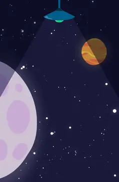
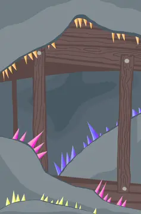

Ball is God?! Zungusha mnara. Kuwa athari.
Arcade ngumu ya kushuka wima ambapo kuburuta mlalo huzungusha mnara kuzunguka Espa inayoanguka. Ruka kutua kwa usalama, chaji Kombo ya Smash na uvunje ulimwengu wa kihadithi ambapo pigo moja lisilolindwa humaliza raundi.
Uzalishaji unaendelea: matukio kumi ya maeneo, maadui wakuu, mazungumzo yenye matawi na njia za karma zinazobadilisha sheria za mchezo.
Zungushaburuta mnara kuzunguka Espa
Hatariruka kutua kwa usalama mara tatu
Pondavunja jukwaa
Ndani ya toleo la sasa
Karma hubadilika zaidi kuliko mazungumzo.
Njia za karma za mwanga, kati na giza hubadilisha tabia ya ngao, ishara za onyo, ukali wa maadui na awamu za maadui wakuu, hivyo hadithi hubadilisha jinsi unavyocheza.
Hali ya toleo Uzalishaji unaoendeleaUlimwengu wote kumi wa mazungumzo
Mandharinyuma ya mazungumzo kwa ulimwengu wote kumi, kwa mpangilio wa kushuka kutoka Ena hadi Deka.




UI ya uzalishaji wa sasa
Uchaguzi wa ngazi, mazungumzo na skrini za matokeo katika toleo la sasa.
Huu ni mtiririko wa sasa kwa mpangilio utakaoukutana nao: uchaguzi wa ngazi, mazungumzo, chaguo muhimu, kisha ushindi au skrini tofauti ya kushindwa. Kila picha iliyo hapa chini inatumia sanaa kutoka mradi wa uzalishaji wa Unity.
Njia ya angani huchagua viwango vilivyozalishwa katika sura kumi za viwango 100.
Menyu ya uzalishaji huonyesha maeneo kumi katika sura za viwango 100 na hufunguka moja kwa moja kwenye raundi iliyochaguliwa.

 201
201Mazungumzo hufanyika ndani ya eneo lenyewe.
Picha ya mhusika, sanaa ya eneo na bango la jina la mzungumzaji hushiriki fremu moja wima.


Shash
Endelea, basi - lakini usifikiri itakuwa rahisi. Trial zinakungoja ambazo zitafanya kila kitu kilichotangulia kuonekana kama kitu kidogo.
04 / Chaguo la Milestone
Jibu linakuwa sehemu ya kushuka.
Katika viwango vya ndani vya 90 na 100, paneli maalum huuliza uamuzi wa kumsamehe au kuua kabla ya mazungumzo kuamua raundi.

Okoa
Ua
05 / menyu za matokeo
Ushindi unaendelea. Kushindwa kunarudisha kwenye changamoto ile ile.
Muundo wa sasa una hali mbili tofauti za matokeo: PanelWin inatoa kucheza tena na kiwango kinachofuata, huku PanelOver kikibaki na kitendo kimoja wazi cha kucheza tena.
Ushindi · PanelWin
Kushuka kumekamilika
 Cheza tena
Inayofuata
Cheza tena
Inayofuata
Cheza tena
Inayofuata
Wahusika wa mazungumzo
Nyuso zilikutana njiani kuteremka.
Herufi zote 25 zenye jozi za picha zilizo wazi na zilizofungwa za uzalishaji zimejumuishwa hapa chini. Elekeza au lenga kadi ili kubadilisha mwonekano.


Muhtasari wa mchezo
Ball is God?! ni mchezo mgumu wa arcade kuhusu kuanguka kupitia mnara unaozunguka.
Wazo
Mwongoze Espa kushuka mnara wa kimungu. Kosa moja linaweza kumaliza mchezo, na chaguo zako kubwa hubadilisha jinsi ulimwengu unavyofanya kazi.
Toleo la sasa
Mandhari kumi ya eneo, uzalishaji wa minara kiutaratibu, Kombo ya Smash, ngao ya kutelezesha, usanidi wa maadui wakuu, mazungumzo yenye matawi, menyu za uzalishaji na picha zilizo tayari kwa hisia mbalimbali zinatekelezwa.
Hadhira
Wachezaji wanaopenda michezo migumu ya arcade ya simu, muda wa hatari-na-zawadi na maadui wakuu, wakiwa na hadithi ya kufuatilia.
Hali
Uzalishaji unaendelea. Kazi ya hivi karibuni inahusu mifumo ya runtime, sanaa ya ulimwengu, majaribio na jinsi mchezo unavyochezwa kwenye simu.
Vipengele
Unachofanya katika Ball is God?!
Kushuka kwa kuburuta ili kuzungusha
Kuburuta mlalo huzungusha mnara kuzunguka Espa inayoanguka kiotomatiki, kupanga mapengo, hatari na majukwaa salama.
Shinikizo la arcade ngumu
Pigo moja lisilo na ulinzi humaliza mchezo, hivyo unapaswa kusoma mnara na kupangia wakati kila hatua.
Maadui wakuu na ulimwengu wa kihadithi
Matukio kumi ya maeneo, kila moja na maadui wake wakuu, hubeba hadithi kutoka ulimwengu mmoja hadi mwingine.
Chaguo zinazobadilisha sheria
Rehema, nguvu na karma hubadilisha mazungumzo, sheria za ngao, uchokozi wa adui, viashiria vya mashambulizi na awamu za maadui wakuu.
Kitanzi cha uchezaji
Jinsi ya kucheza Ball is God?!
- Hatua ya 01Soma njia ya kushuka
Chunguza majukwaa, mapengo na hatari zinazofuata na utafute nyakati salama za kutenda unapoanguka.
- Hatua ya 02Zungusha mnara
Kuburuta mlalo hugeuza ulimwengu kuzunguka Espa, na kupanga jukwaa salama au pengo la kimakusudi.
- Hatua ya 03Hatari na vunja
Ruka majukwaa matatu ili kuchaji Kombo ya Smash, kisha uvunje miundo huku ngao ikifunika kosa moja baya.
- Hatua ya 04Chagua matokeo
Rehema na nguvu huunda karma, mazungumzo na sheria za uchezaji zinazobebwa hadi kwa maadui na maadui wakuu.
Hadithi / ulimwengu
Mnara wa kihadithi ambapo chaguo zako zinakufuata kuelekea chini.
Ball is God?! ilianza kutokana na mvuto wa utotoni kwa arcade za simu za kushuka wima: kusoma mapengo, kuitikia haraka na kunusurika kwa silika.
Muundo huu unaweza kubeba mengi zaidi: maadui wakuu, wahusika wenye haiba, hadithi na mvutano wa kimaadili. Mradi wa sasa unamfuata Espa kupitia matukio kumi ya maeneo na kundi la wahusika wa ajabu, kukiwa na chaguo zinazobadilisha hadithi na uchezaji.
Hivyo lengo likawa mchezo rahisi wa arcade wa kushuka wima wenye shinikizo la pambano la maadui wakuu na matokeo ya RPG inayoendeshwa na hadithi.
- Maono
- Mchezo wa arcade wa mnara unaozunguka wenye hadithi ya kihadithi
- Upeo wa ulimwengu wa sasa
- Maeneo kumi na mipangilio ya maadui wakuu
- Hatua ya hadithi
- Kamilisha rasimu ya hadithi ya umbo refu
- Hali ya uzalishaji
- Uzalishaji unaoendelea
Kwa muhtasari
Vidhibiti rahisi vya kuburuta, vyenye hadithi inayobadilisha sheria.
Vidhibiti vya kuburuta ili kuzungusha vinajibu papo hapo. Mengine yanatoka kwenye ulimwengu wa kihadithi, maadui wakuu na chaguo zinazobadilisha uchezaji.
Toleo la sasa tayari linachanganya uzalishaji wa mnara wa kubainika, mipigo ya hatari-na-zawadi, kushindwa kwa pigo moja, maadui wakuu, mazungumzo yenye matawi na karma inayobadilisha uchezaji.
- Aina
- Arcade ya kushuka wima inayoendeshwa na hadithi
- Lengo la jukwaa
- iOS / Android
- Umbo la kipindi
- Vipindi vya haraka vinavyotegemea ujuzi
- Studio
- WillowinWorlds
Pakua vipengee
Vipengee vya vyombo vya habari na watayarishi vya Ball is God?!
Maonyesho ya awali ya WebP kwa utangazaji wa vyombo vya habari, mapitio ya wachapishaji na marejeo ya ukurasa wa duka. Faili chanzo zenye ubora kamili zinapatikana kwa ombi.
Chapa na wahusika
Aikoni ya mchezo pamoja na herufi zote 25 za sasa ambazo zina picha kamili za mazungumzo ya uzalishaji. Majina yanalingana na funguo za ujanibishaji wa Unity.
EspaPicha ya mhusika wa mchezaji.
RevlaPicha ya mazungumzo ya uzalishaji.
ShashPicha ya mazungumzo ya uzalishaji.
ShushPicha ya mazungumzo ya uzalishaji.
ShishPicha ya mazungumzo ya uzalishaji.
GigoPicha ya mazungumzo ya uzalishaji.
GogaPicha ya mazungumzo ya uzalishaji.
GigaPicha ya mazungumzo ya uzalishaji.
AskoldPicha ya mazungumzo ya uzalishaji.
MirasPicha ya mazungumzo ya uzalishaji.
HihPicha ya mazungumzo ya uzalishaji.
HehPicha ya mazungumzo ya uzalishaji.
HahPicha ya mazungumzo ya uzalishaji.
MusyaPicha ya mazungumzo ya uzalishaji.
DusyaPicha ya mazungumzo ya uzalishaji.
SusyaPicha ya mazungumzo ya uzalishaji.
VladusPicha ya mazungumzo ya uzalishaji.
FrishaPicha ya mazungumzo ya uzalishaji.
LurenPicha ya mazungumzo ya uzalishaji.
KurenPicha ya mazungumzo ya uzalishaji.
Don YagonPicha ya mazungumzo ya uzalishaji.
LuryaPicha ya mazungumzo ya uzalishaji.
KhleyaPicha ya mazungumzo ya uzalishaji.
VaronPicha ya mazungumzo ya uzalishaji.
WhitePicha ya mazungumzo ya uzalishaji.
Mandharinyuma ya menyu
Mchoro wa sasa wa uzalishaji unaotumiwa na mfumo wa kuchagua viwango wa angani.
 Menyu ya anga
Menyu ya anga
Ulimwengu wa kushuka wima
Seti kamili ya mandharinyuma kumi ya sasa ya eneo, yamepangwa kutoka Ena hadi Deka.
 01 · Ulimwengu wa angaMandharinyuma ya kushuka wima ya Ena.
01 · Ulimwengu wa angaMandharinyuma ya kushuka wima ya Ena.
 02 · Ulimwengu wa anga za juuMandharinyuma ya kushuka wima ya Dyo.
02 · Ulimwengu wa anga za juuMandharinyuma ya kushuka wima ya Dyo.
 03 · Ulimwengu wa dhorubaMandharinyuma ya kushuka wima ya Tria.
03 · Ulimwengu wa dhorubaMandharinyuma ya kushuka wima ya Tria.
 04 · Ulimwengu wa thelujiMandharinyuma ya kushuka wima ya Tessera.
04 · Ulimwengu wa thelujiMandharinyuma ya kushuka wima ya Tessera.
 05 · Ulimwengu wa volkanoMandharinyuma ya Pente; inahuishwa kwenye mchezo.
05 · Ulimwengu wa volkanoMandharinyuma ya Pente; inahuishwa kwenye mchezo.
 06 · Ulimwengu wa bahariMandharinyuma ya kushuka wima ya Eksi.
06 · Ulimwengu wa bahariMandharinyuma ya kushuka wima ya Eksi.
 07 · Ulimwengu wa jangwaMandharinyuma ya kushuka wima ya Epta.
07 · Ulimwengu wa jangwaMandharinyuma ya kushuka wima ya Epta.
 08 · Ulimwengu wa misituMandharinyuma ya kushuka wima ya Ohto.
08 · Ulimwengu wa misituMandharinyuma ya kushuka wima ya Ohto.


09 · Ulimwengu wa pangoMandharinyuma ya kushuka wima ya Ennea. 10 · Ulimwengu wa kuzimuMandharinyuma ya kushuka wima ya Deka.
10 · Ulimwengu wa kuzimuMandharinyuma ya kushuka wima ya Deka.
Mandharinyuma za arcade ya hadithi
Seti kamili ya eneo la mazungumzo: Hall of Light pamoja na mandharinyuma kwa ulimwengu wote kumi.
 00 · Ukumbi wa MwangaMandharinyuma ya mazungumzo ya ufunguzi.
00 · Ukumbi wa MwangaMandharinyuma ya mazungumzo ya ufunguzi.
 01 · Mazungumzo ya angaMandharinyuma ya hadithi ya Ena.
02 · Mazungumzo ya anga za juuMandharinyuma ya hadithi ya Dyo.
01 · Mazungumzo ya angaMandharinyuma ya hadithi ya Ena.
02 · Mazungumzo ya anga za juuMandharinyuma ya hadithi ya Dyo.

 03 · Mazungumzo ya dhorubaMandharinyuma ya hadithi ya Tria.
03 · Mazungumzo ya dhorubaMandharinyuma ya hadithi ya Tria.
 04 · Mazungumzo ya thelujiMandharinyuma ya hadithi ya Tessera.
04 · Mazungumzo ya thelujiMandharinyuma ya hadithi ya Tessera.
 05 · Mazungumzo ya volkanoMandharinyuma ya hadithi ya Pente.
05 · Mazungumzo ya volkanoMandharinyuma ya hadithi ya Pente.
 06 · Mazungumzo ya bahariMandharinyuma ya hadithi ya Eksi.
06 · Mazungumzo ya bahariMandharinyuma ya hadithi ya Eksi.
 07 · Mazungumzo ya jangwaniMandharinyuma ya hadithi ya Epta.
07 · Mazungumzo ya jangwaniMandharinyuma ya hadithi ya Epta.
 08 · Mazungumzo ya msituMandharinyuma ya hadithi ya Ohto.
08 · Mazungumzo ya msituMandharinyuma ya hadithi ya Ohto.
 09 · Mazungumzo ya pangoMandharinyuma ya hadithi ya Ennea.
09 · Mazungumzo ya pangoMandharinyuma ya hadithi ya Ennea.
 10 · Mazungumzo ya kuzimuMandharinyuma ya hadithi ya Deka.
10 · Mazungumzo ya kuzimuMandharinyuma ya hadithi ya Deka.
Maswali Yanayoulizwa Mara kwa Mara ya Ball is God?!
Maswali ya kawaida kuhusu Ball is God?!
Ball is God?! ni mchezo wa aina gani?
Mchezo mgumu wa arcade wa kushuka wima. Unazungusha mnara kuzunguka Espa anayeanguka, unaruka sehemu salama za kutua ili kuchaji mipigo na kupenya ulimwengu wa kihadithi.
Unachezaje Ball is God?!
Buruta mlalo ili kuzungusha mnara, ruka majukwaa matatu ili kuchaji Kombo ya Smash, na telezesha wima wakati ngao ya kupoa lazima ichukue pigo la kuua.
Je, Ball is God?! imetoka tayari?
Bado. Unaendelea kutengenezwa kwa mifumo ya runtime, sanaa ya ulimwengu, maudhui ya hadithi na majaribio. Hakuna tarehe ya kutolewa kwa umma. Majukwaa yanayolengwa ni iOS na Android.
Ni nini kinachofanya Ball is God?! kuwa tofauti?
Inachanganya shinikizo la arcade la hatari-na-zawadi na maeneo kumi na karma inayobadilisha mazungumzo, maadui, ishara za mashambulizi, ngao na maadui wakuu.
Nani anatengeneza Ball is God?!
WillowinWorlds, studio huru inayotengeneza michezo ya chemshabongo na arcade kwa simu.
Je, naweza kutumia vipengee vya vyombo vya habari vya Ball is God?!
Ndiyo, kwa vyombo vya habari, mapitio ya wachapishaji na marejeo ya duka. Faili chanzo hubaki za faragha isipokuwa uziombe kwetu.
Ball is God?! Devlog
Nini kilibadilika na lini
- Nyuso za ulimwengu na uthibitishaji wa hatari
Uwasilishaji wa wahusika, uzalishaji wa kubainika na hatari za miiba vilipitiwa kwa pamoja kwa upande wa mwonekano na uthibitishaji.
- Julai 2026Uboreshaji wa UI ya uzalishaji na wahusika
Uchaguzi wa ngazi, vidhibiti vya vitendo vilivyoshirikiwa, fremu wima ya mazungumzo na sura za wahusika za jozi sasa vimewekwa.
- Februari 2026Ukaguzi wa upeo wa mradi
Timu ilikamilisha awamu kuu ya ujumuishaji wa hadithi na kukagua kiwango kamili cha mradi: ulimwengu kumi, chaguo za maadili, maadui wakuu na miisho mingi.
- Aprili-Mei 2025Kuandika upya hadithi na uwezo
Hadithi kamili iliandikwa upya, uwezo wa wahusika kuboreshwa na matokeo ya maadili yakawa wazi zaidi.
- Agosti 2024Mwelekeo wa hadithi huanza
Timu iliamua Ball is God?! inapaswa kuwa zaidi ya mchezo rahisi wa arcade wa kushuka, na kuongeza hadithi ya kihadithi na dira ya chaguo za kimaadili.
- Julai 2024Dhana asilia
Mradi ulianza kama wazo la kwanza la mchezo la studio: mchezo wa kasi wa arcade wima kuhusu kuanguka kupitia mnara wa kimungu.
- Toleo la sasaArcade na hadithi katika toleo moja
Kushuka kwa mnara unaozunguka, mpigo wa kombo, ngao ya kutelezesha, maadui wakuu, mazungumzo na karma sasa vinafanya kazi pamoja katika toleo moja.